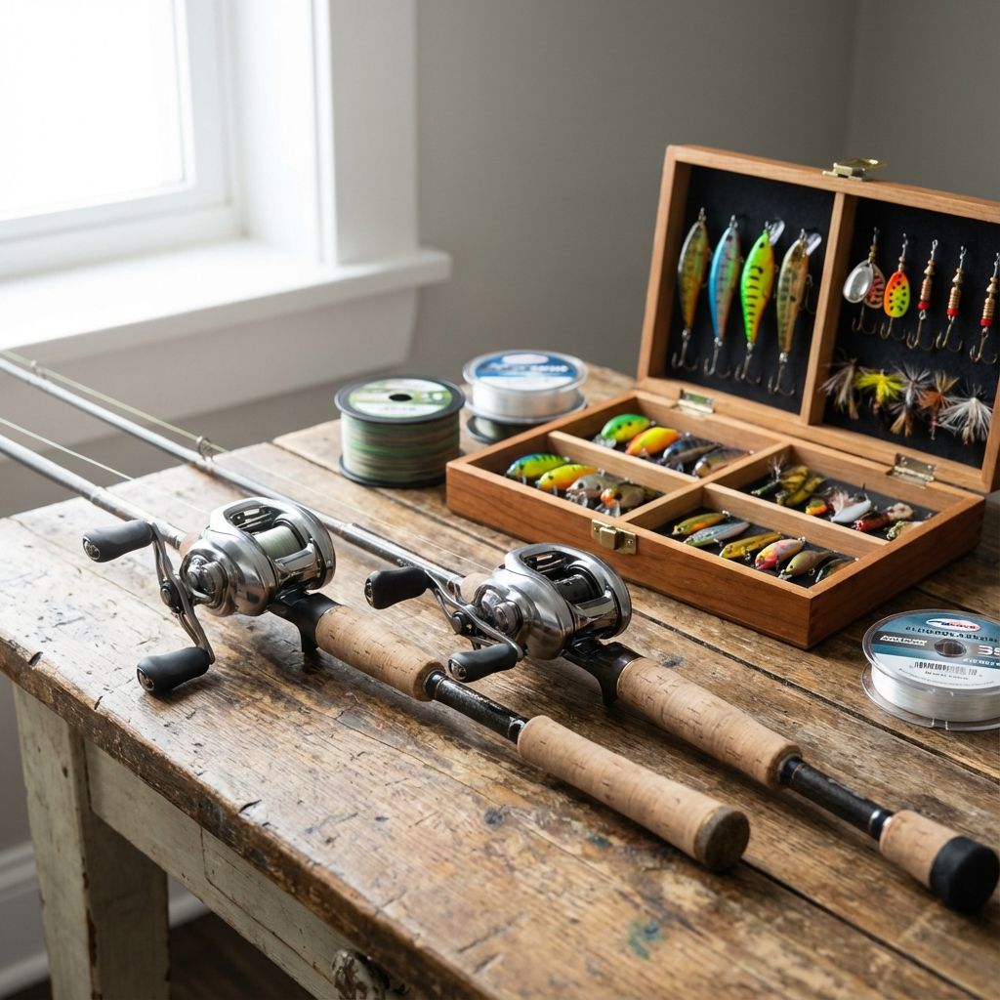
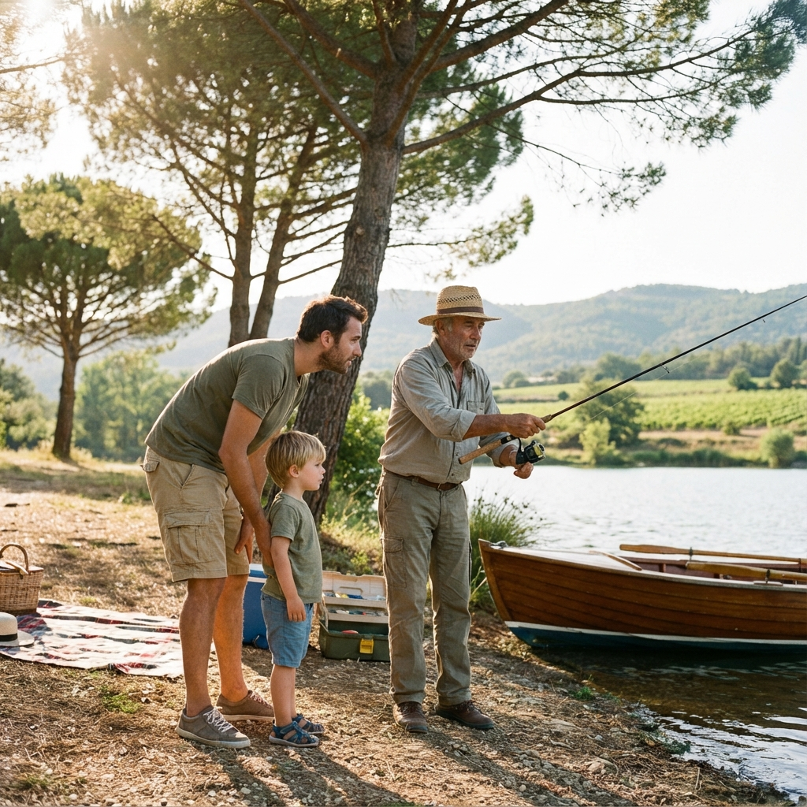

Nos formules
Des sorties adaptées à chaque envie
Initiation, perfectionnement ou moment en famille : trouvez la formule qui vous correspond

🎣 Initiation pêche en lac
Découvrez les bases de la pêche dans un cadre naturel exceptionnel. Idéal pour les débutants et les familles.
En savoir plus
🎯 Perfectionnement
Affinez vos techniques et explorez de nouveaux spots avec un guide expert des eaux provençales.
En savoir plus

👨👩👧👦 Sortie famille
Partagez un moment unique avec vos proches au bord de l'eau. Une expérience accessible à tous les âges.
En savoir plus